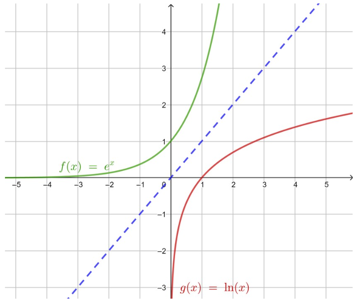

Fonction logarithme népérien
1 Fonction logarithme népérien
La fonction exponentielle est continue, strictement croissante et strictement positive.
D’après le théorème de la bijection (corollaire du théorème des valeurs intermédiaires), pour tout réel x>0, l’équation \text{e}^t=x, d’inconnue t, admet une unique solution dans \mathbb{R}, notée \ln(x).
1.1 Définition
La fonction définie sur \mathbb{R}^{+*}, qui à tout réel x>0 associe \ln(x), l’unique solution de l’équation \text{e}^t=x, est appelée fonction logarithme népérien, notée \ln.
Dans un repère orthonormé, la représentation graphique de la fonction logarithme népérien est le symétrique de la représentation graphique de la fonction exponentielle par rapport à la première bissectrice, d’équation y=x.

1.2 Conséquences
(admises)
\ln(1)=0
\ln(\text{e})=1
Pour tout x \in \mathbb{R}, \ln(\text{e}^x)=x
Pour tout x \in \mathbb{R}^{+*}, \text{e}^{\ln(x)}=x
Résoudre dans \mathbb{R} les équations suivantes :
\text{e}^x=3
\text{e}^{3x-2}=2
\ln(x)=-2
\ln(-2x+1)=4
\text{e}^x=3 \Longleftrightarrow x=\ln(3) donc S=\{\ln(3)\}
\text{e}^{3x-2}=2 \Longleftrightarrow 3x-2=\ln(2) \Longleftrightarrow x=\frac{2+\ln(2)}{3} donc S=\{\frac{2+\ln(2)}{3}\}
On résout dans \mathbb{R}^{+*} : \ln(x)=-2 \Longleftrightarrow x=\text{e}^{-2} donc S=\{\text{e}^{-2}\}
-2x+1>0 \Longleftrightarrow x<\frac{1}{2}. On résout dans ]-\infty;\frac{1}{2}[ : \ln(-2x+1)=4 \Longleftrightarrow -2x+1=\text{e}^4 \Longleftrightarrow x=\frac{1-\text{e}^4}{2}. Or \frac{1-\text{e}^4}{2}<\frac{1}{2} donc S=\{\frac{1-\text{e}^4}{2}\}
2 Propriétés algébriques
2.1 Relation fonctionnelle
Pour tous réels x et y strictement positifs, \ln(xy)=\ln(x)+\ln(y).
Soient x et y deux réels strictement positifs. D’une part : \text{e}^{\ln(xy)}=xy. D’autre part : \text{e}^{\ln(x)}\times \text{e}^{\ln(y)}=xy. Ainsi, \text{e}^{\ln(xy)}=\text{e}^{\ln(x)}\times \text{e}^{\ln(y)}=\text{e}^{\ln(x)+\ln(y)}. Finalement, \ln(xy)=\ln(x)+\ln(y).
La fonction exponentielle transforme une somme en produit ; sa réciproque, la fonction logarithme népérien, transforme un produit en somme.
2.2 Autres règles de calcul
Pour tous réels x et y strictement positifs et pour n un entier relatif.
\ln(\frac{1}{x})=-\ln(x)
\ln(\frac{x}{y})=\ln(x)-\ln(y)
\ln(x^n)=n\ln(x)
\ln(\sqrt{x})=\frac{1}{2}\ln(x)
\ln(x \times \frac{1}{x}) = \ln(1) = 0, donc \ln(x) + \ln(\frac{1}{x}) = 0, c’est-à-dire \ln(\frac{1}{x})=-\ln(x).
\ln(\frac{x}{y}) = \ln(x \times \frac{1}{y}) = \ln(x)+\ln(\frac{1}{y}) = \ln(x) - \ln(y) d’après le point 1.
\text{e}^{\ln(x^n)} = x^n et \text{e}^{n\ln(x)} = (\text{e}^{\ln(x)})^n = x^n. Donc \text{e}^{\ln(x^n)}=\text{e}^{n\ln(x)}, et ainsi \ln(x^n)=n\ln(x).
2\ln(\sqrt{x}) = \ln((\sqrt{x})^2) = \ln(x), donc \ln(\sqrt{x})=\frac{1}{2}\ln(x).
Écrire les nombres suivants en fonction de \ln(2) : \ln(32), \ln(\frac{1}{1024}) et \ln(8\sqrt2).
\ln(32)=\ln(2^5)=5\ln(2)
\ln(\frac{1}{1024})=-\ln(1024)=-\ln(2^{10})=-10\ln(2)
\ln(8\sqrt2)=\ln(8)+\ln(\sqrt{2})=3\ln(2)+\frac{1}{2}\ln(2)=\frac{7}{2}\ln(2)
3 Étude de la fonction logarithme népérien
3.1 Dérivée et variations
La fonction logarithme népérien est dérivable sur ]0;+\infty[ et pour tout réel x>0, \ln'(x)=\frac{1}{x}.
La fonction logarithme népérien est continue sur ]0;+\infty[.
La fonction logarithme népérien est strictement croissante sur ]0;+\infty[.
On admet que \ln est dérivable sur ]0;+\infty[. Pour x>0, soit f(x)=\text{e}^{\ln(x)}=x. Par composition, f'(x)=\ln'(x)\text{e}^{\ln(x)}=\ln'(x)\times x. Or f'(x)=1, donc \ln'(x)\times x=1, c’est-à-dire \ln'(x)=\frac{1}{x}.
La fonction \ln est dérivable sur ]0;+\infty[, donc continue sur ]0;+\infty[.
Sur ]0;+\infty[, \ln'(x)=\frac{1}{x}>0 donc \ln est strictement croissante.
3.2 Signe, équations, inéquations
(admises)
Pour tous réels x et y strictement positifs.
\ln(x)<0 \Longleftrightarrow x \in ]0;1[
\ln(x)>0 \Longleftrightarrow x>1
x=y \Longleftrightarrow \ln(x)=\ln(y)
x<y \Longleftrightarrow \ln(x)<\ln(y)
3.3 Limites
\lim\limits_{x \to +\infty} \ln(x)=+\infty
\lim\limits_{x \to 0^+} \ln(x)=-\infty
Soit A un réel. \ln(x)>A \Longleftrightarrow x>\text{e}^A : pour tout réel A, \ln(x)>A dès que x>\text{e}^A, donc \lim\limits_{x \to +\infty} \ln(x)=+\infty.
En posant X=1/x, \lim\limits_{x \to 0^+} \ln(x) = \lim\limits_{X \to +\infty} \ln(1/X) = \lim\limits_{X \to +\infty} -\ln(X) = -\infty.
3.4 Convexité
La fonction logarithme népérien est concave sur ]0;+\infty[.
f(x)=\ln(x) \implies f'(x)=\frac{1}{x} \implies f''(x)=-\frac{1}{x^2}. Comme f''(x)<0, f est concave.
La fonction \ln étant strictement croissante et concave, sa représentation graphique « croît de moins en moins vite ». On parle de croissance ralentie.
4 Approfondir l’étude de la fonction logarithme népérien
4.1 Limites
\lim\limits_{x \to 0} \frac{\ln(1+x)}{x}=1
Croissances comparées
Pour n \in \mathbb{N}^* :
\lim\limits_{x \to 0^+} x^n\ln(x)=0
\lim\limits_{x \to +\infty} \dfrac{\ln(x)}{x^n}=0
4.2 Fonctions composées avec la fonction logarithme népérien
(admise)
Soit I un intervalle. Si u est une fonction dérivable et strictement positive sur I, alors x \mapsto \ln(u(x)) est dérivable sur I et (\ln(u))'(x)=\frac{u'(x)}{u(x)}.
Soit f la fonction définie sur \mathbb{R} par f(x)=\ln(x^4+2). La fonction u : x \mapsto x^4+2 est dérivable et strictement positive sur \mathbb{R}. D’où, pour tout réel x, f'(x)=\frac{4x^3}{x^4+2}.